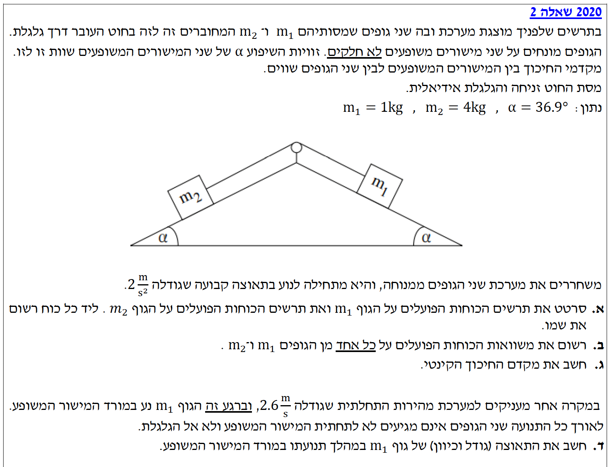
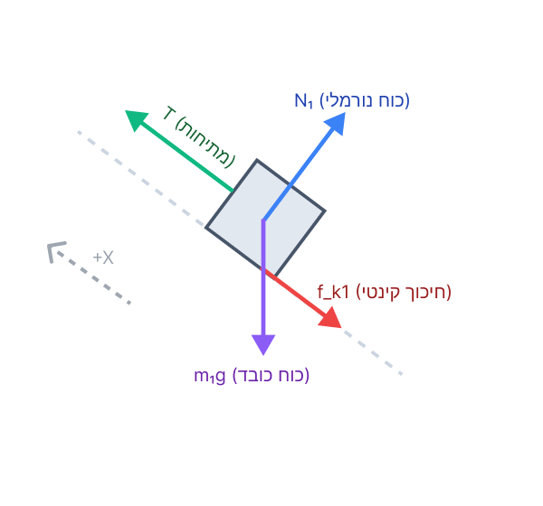
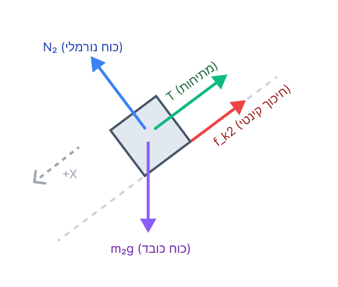

בשאלה זו אנו עוסקים בדינמיקה של שני גופים המחוברים בחוט על גבי שני מישורים משופעים. ננתח את הכוחות, נבנה משוואות כוחות (חוק שני של ניוטון) ונבדוק כיצד כיוון התנועה משפיע על כוח החיכוך.

לסרטט את תרשים הכוחות הפועלים על הגוף \( m_1 \) ואת תרשים הכוחות הפועלים על הגוף \( m_2 \), ולציין את שם כל כוח לצד הסימון שלו.
מכיוון שזווית השיפוע שווה בשני הצדדים, המסה הגדולה יותר (הגוף \( m_2 \)) היא זו שתכתיב את כיוון התנועה הכללי של המערכת. רכיב כוח הכובד המושך את \( m_2 \) במורד המישור שלו, גדול מרכיב כוח הכובד המושך את \( m_1 \) במורד המישור שלו. לכן, המערכת תאיץ כך שגוף \( m_2 \) ינוע במורד המישור השמאלי, וגוף \( m_1 \) יימשך במעלה המישור הימני.
נע במעלה המישור. הציר החיובי נבחר במעלה המישור.

נע במורד המישור. הציר החיובי נבחר במורד המישור.

כל הנתונים מסעיף א' תקפים. המערכת מאיצה.
את משוואות החוק השני של ניוטון בצירים הרלוונטיים עבור כל אחד מן הגופים בנפרד.
עבור גוף \( m_1 \): נבחר את ציר ה-x החיובי במעלה המישור הימני (כיוון התאוצה שנגזר ממערכת הצירים שבחרנו), ואת ציר ה-y במאונך למישור כלפי מעלה.
נציב את ביטוי החיכוך הקינטי \( f_{k1} = \mu_k N_1 \):
עבור גוף \( m_2 \): נבחר את ציר ה-x החיובי במורד המישור השמאלי (כיוון התאוצה שהגדרנו למערכת), ואת ציר ה-y במאונך למישור כלפי מעלה.
נציב את ביטוי החיכוך הקינטי \( f_{k2} = \mu_k N_2 \):
הדרך האלגנטית ביותר לפתור מערכת כזו היא חיבור המשוואות, מה שיגרום לכוח המתיחות \( T \) "להתבטל":
נוציא גורמים משותפים:
כעת נציב את כל הערכים המספריים שידועים לנו מנתוני השאלה:
ברגע שהמערכת מקבלת מהירות התחלתית, כיוון התנועה משתנה ולכן כיווני כוחות החיכוך מתהפכים. נבנה משוואות כוחות חדשות. גם כאן נקבע למערכת כולה את הכיוון החיובי בהתאם לכיוון התנועה החדש שלה.
נחשב את ערכי כוחות החיכוך:
נחבר את משוואות (3) ו-(4) כדי לבטל את \( T \):
משמעות התוצאה: קיבלנו תאוצה בסימן מינוס. מכיוון שהגדרנו את הכיוון החיובי ככיוון המהירות (התנועה החדשה של המערכת), המשמעות היא שווקטור התאוצה מנוגד לווקטור המהירות ולכן גודל המהירות יורד. (חשוב להדגיש: גודל המהירות יורד לא בגלל שהתאוצה היא שלילית, אלא בגלל שהתאוצה מנוגדת לכיוון התנועה).